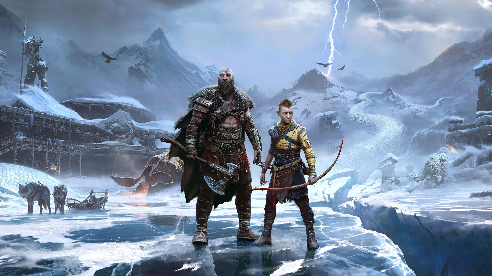

Bienvenido al Sitio Web de GOD OF WAR
Comenzando con el lanzamiento de God of War en 2005 para PlayStation 2, Santa Monica Studio ha creado juegos en múltiples plataformas hasta el lanzamiento más reciente en 2018. Ahora llega la secuela de God of War (2018), titulada God of War Ragnarök. Kratos y Atreus comienzan un nuevo viaje mítico en busca de respuestas antes de que llegue Ragnarök (en la mitología nórdica, considerada la batalla del fin del mundo). Juntos, padre e hijo deben arriesgarlo todo en su viaje a cada uno de los Nueve Reinos. A lo largo de impresionantes paisajes mitológicos, se enfrentarán a bestias salvajes y hasta dioses nórdicos mientras se preparan para el enfrentamiento que decidirá todo. Armado con sus confiables armas de guerra, incluidas el Hacha Leviatán y las Espadas del Caos, las habilidades mortales de Kratos se pondrán a prueba como nunca antes mientras lucha para proteger a su familia. También te esperan una gran cantidad de nuevas habilidades para él y Atreus, dejando espacio para un combate fluido, expresivo y personalizable en esta historia épica e inquebrantable.